<!DOCTYPE html>
<html lang="sv">
<head>
    <meta charset="utf-8" />
    <meta name="viewport" content="width=device-width, initial-scale=1" />
    <title>För dig som sköter hushållet – Hemordna</title>
    <link rel="icon" href="../../favicon.png" />
    <link rel="stylesheet" href="../assets/guide.css" />
</head>
<body>
<script>
window.GUIDE = {
    title: "För dig som sköter hushållet",
    subtitle: "Användarguide",
    intro: "Du som satt upp hemmet i appen: rummen, sysslorna och vem som är med. Allt i "
        + "familjeguiden gäller dig också – det här är det som tillkommer.",
    fakta: ["7 kapitel", "Tagna på 390 × 844", "Uppdaterad 14 september 2026"],
    sections: [
        {
            id: "rum",
            t: "Lägg till rum",
            html:
                "<p>Hemordna utgår från hemmets rum. Väljer du en rumstyp följer färdiga sysslor "
                + "med – med rimliga tider och hur ofta de behöver göras. Du slipper skriva in allt "
                + "själv, och kan ändra efteråt.</p>"

                + "<ol class='gor'>"
                + "  <li>Gå till <span class='ui'>Rum</span> längst ner och tryck <span class='ui'>+ Nytt rum</span>.</li>"
                + "  <li>Välj rumstyp i listan, till exempel Kök eller Badrum.</li>"
                + "  <li>Tryck <span class='ui'>+ Lägg till fler rum</span> för att ta flera på en gång.</li>"
                + "  <li>Tryck <span class='ui'>Skapa</span>. Appen visar uppskattad tid per rum.</li>"
                + "</ol>"

                + "<div class='shots'>"
                + "  <figure><div class='telefon'>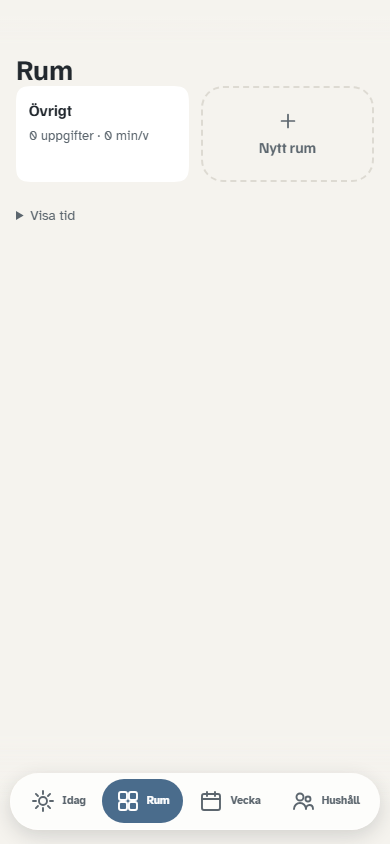</div>"
                + "    <figcaption><b>Tomt att börja med</b> – bara rutan för att lägga till.</figcaption></figure>"
                + "  <figure><div class='telefon'>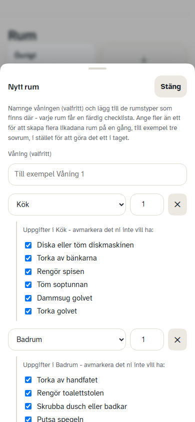</div>"
                + "    <figcaption><b>Välj rumstyp</b> – flera rum i samma omgång.</figcaption></figure>"
                + "  <figure><div class='telefon'>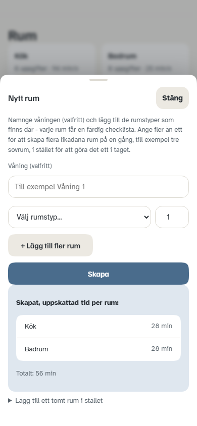</div>"
                + "    <figcaption><b>Klart</b> – med uppskattad tid per rum.</figcaption></figure>"
                + "  <figure><div class='telefon'>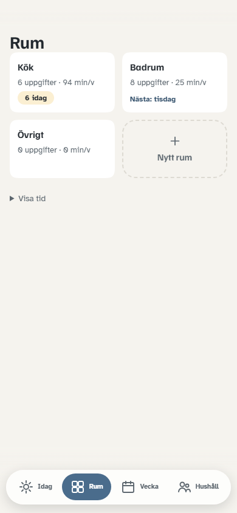</div>"
                + "    <figcaption><b>Rumsvyn</b> – antal uppgifter och tid per vecka.</figcaption></figure>"
                + "</div>"

                + "<div class='notis'><p><strong>Övrigt finns alltid</strong>, även om du inte skapar "
                + "det. Där hamnar sådant som inte hör till ett särskilt rum – handla mat, hämta paket.</p></div>"

                + "<div class='notis tips'><strong>Har ni flera våningar?</strong> Skriv våningens namn "
                + "när du skapar rummen, så grupperas de per våning i rumsvyn.</div>"
        },
        {
            id: "uppgifter",
            t: "Uppgifter i ett rum",
            html:
                "<p>Tryck på ett rum för att se allt som hör till det. Här lägger du till egna "
                + "sysslor, ändrar hur ofta något ska göras, eller tar bort det som inte passar er.</p>"

                + "<ol class='gor'>"
                + "  <li>Tryck på rummet, till exempel <span class='ui'>Kök</span>.</li>"
                + "  <li>Välj <span class='ui'>Lägg till uppgift</span>.</li>"
                + "  <li>Skriv vad som ska göras.</li>"
                + "  <li>Välj ungefär hur lång tid det tar – från <span class='ui'>Ingen tid</span> till "
                + "      <span class='ui'>Flera timmar</span>.</li>"
                + "</ol>"

                + "<div class='shots'>"
                + "  <figure><div class='telefon'>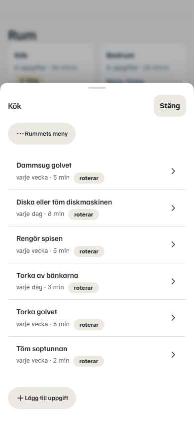</div>"
                + "    <figcaption><b>Rummets uppgifter</b> – tryck på ⋯ för att ändra hela rummet på en gång.</figcaption></figure>"
                + "  <figure><div class='telefon'>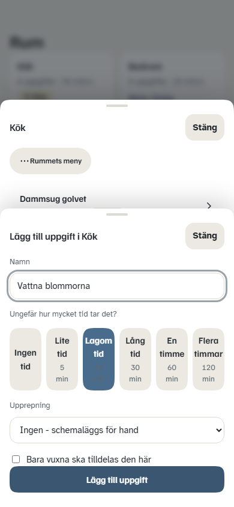</div>"
                + "    <figcaption><b>Ny uppgift</b> – tiden väljs i ord, inte i minuter.</figcaption></figure>"
                + "</div>"

                + "<h3>Bra att veta</h3>"
                + "<ul>"
                + "  <li><strong>Tiden är ett ungefär.</strong> Den används för att räkna ut hur mycket "
                + "      som får plats en vanlig dag – aldrig för att mäta hur snabb någon är.</li>"
                + "  <li><strong>Bara vuxna</strong> går att kryssa i på en uppgift. Då hoppar turordningen "
                + "      över den som är barn eller ungdom.</li>"
                + "  <li><strong>Tvätt anpassas efter hur många ni är.</strong> Ett hushåll på fyra får den "
                + "      oftare än ett ensamhushåll, utan att du behöver ställa in något.</li>"
                + "  <li><strong>Pausa ett rum</strong> under en renovering. Inget planeras in där så länge, "
                + "      och det hopar sig inte till efteråt.</li>"
                + "</ul>"
        },
        {
            id: "bjud-in",
            t: "Bjud in familjen",
            html:
                "<p><span class='ui'>Hushåll</span> är den enda vyn som visar hela familjen. Den är "
                + "inte startskärm och behöver inte öppnas dagligen.</p>"

                + "<ol class='gor'>"
                + "  <li>Tryck <span class='ui'>Bjud in</span> för att visa hushållets kod.</li>"
                + "  <li>Dela koden med den som ska gå med – de anger den när de skapar sitt konto.</li>"
                + "  <li>Ska någon inte ha eget konto, till exempel ett yngre barn, välj "
                + "      <span class='ui'>Eller lägg till en medlem utan eget konto</span>.</li>"
                + "  <li>Sätt personens roll, så räknar appen ut en rimlig tid att börja med.</li>"
                + "</ol>"

                + "<div class='shots'>"
                + "  <figure><div class='telefon'>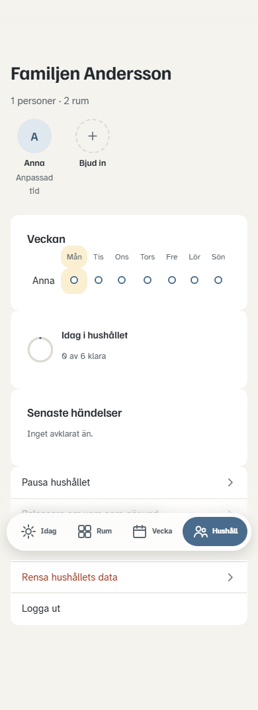</div>"
                + "    <figcaption><b>Hushållet</b> – vem som finns med, och veckans läge.</figcaption></figure>"
                + "  <figure><div class='telefon'>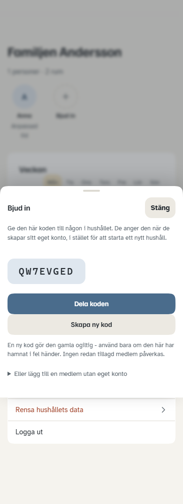</div>"
                + "    <figcaption><b>Bjud in</b> – koden delas eller kopieras.</figcaption></figure>"
                + "</div>"

                + "<div class='notis obs'><strong>Koden ger medlemskap, ingenting mer.</strong> Hamnar "
                + "den fel skapar du en ny med <span class='ui'>Skapa ny kod</span>. Den gamla slutar då "
                + "fungera, men ingen som redan gått med påverkas.</div>"
        },
        {
            id: "behorighet",
            t: "Vem får ändra vad",
            html:
                "<p>Alla i familjen gör sina egna uppgifter. Men alla behöver inte kunna göra om "
                + "hemmets uppsättning – därför finns en kryssruta per person.</p>"

                + "<ol class='gor'>"
                + "  <li>Gå till <span class='ui'>Hushåll</span> och tryck på personens namn.</li>"
                + "  <li>Kryssa i eller ur <span class='ui'>Kan ändra rum, uppgifter och medlemmar</span>.</li>"
                + "</ol>"

                + "<div class='shots'>"
                + "  <figure><div class='telefon'>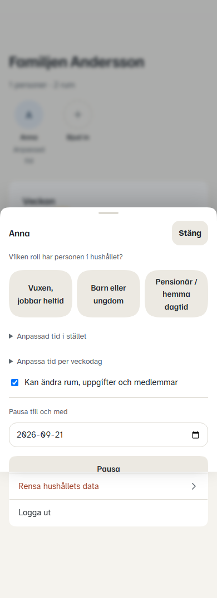</div>"
                + "    <figcaption><b>Kryssrutan</b> – i personens eget kort, under rollen.</figcaption></figure>"
                + "</div>"

                + "<h3>Det här styr kryssrutan</h3>"
                + "<table>"
                + "<thead><tr><th>Det här gör man</th><th>Utan kryss</th><th>Med kryss</th></tr></thead>"
                + "<tbody>"
                + "<tr><td>Bocka av, ångra, skjuta upp</td><td class='ja'>Ja</td><td class='ja'>Ja</td></tr>"
                + "<tr><td>Extra uppgift på sin egen dag</td><td class='ja'>Ja</td><td class='ja'>Ja</td></tr>"
                + "<tr><td>Sin egen visning och lediga dagar</td><td class='ja'>Ja</td><td class='ja'>Ja</td></tr>"
                + "<tr><td>Pausa sig själv</td><td class='ja'>Ja</td><td class='ja'>Ja</td></tr>"
                + "<tr><td>Lägga till eller ta bort rum</td><td class='nej'>Nej</td><td class='ja'>Ja</td></tr>"
                + "<tr><td>Ändra uppgifter och hur ofta</td><td class='nej'>Nej</td><td class='ja'>Ja</td></tr>"
                + "<tr><td>Bjuda in eller ta bort medlemmar</td><td class='nej'>Nej</td><td class='ja'>Ja</td></tr>"
                + "<tr><td>Pausa någon annan</td><td class='nej'>Nej</td><td class='ja'>Ja</td></tr>"
                + "</tbody></table>"

                + "<h3>Så ser skillnaden ut</h3>"
                + "<p>Knappar man inte får använda göms – de visas aldrig som låsta eller gråa. Appen "
                + "ställer helt enkelt inte frågan.</p>"

                + "<div class='shots'>"
                + "  <figure><div class='telefon'></div>"
                + "    <figcaption><b>Med kryss</b> – rutan <b>+ Nytt rum</b> finns med.</figcaption></figure>"
                + "  <figure><div class='telefon'></div>"
                + "    <figcaption><b>Utan kryss</b> – samma vy, men rutan är borta. Inget hänglås.</figcaption></figure>"
                + "  <figure><div class='telefon'></div>"
                + "    <figcaption><b>Hushållet utan kryss</b> – färre rader längst ner.</figcaption></figure>"
                + "</div>"

                + "<div class='notis'><p><strong>Den som skapar hushållet får krysset automatiskt.</strong> "
                + "Den som går med via kod får det inte, men kan få det av någon som redan har det. "
                + "Krysset kan aldrig tas bort från den sista personen som har det – ett hushåll kan "
                + "alltså inte bli omöjligt att sköta.</p></div>"
        },
        {
            id: "balans",
            t: "Fördela om arbetet",
            html:
                "<p>Blev fördelningen sned? <span class='ui'>Balansera om vem som gör vad</span> "
                + "flyttar utestående uppgifter mellan er så att var och ens andel bättre matchar "
                + "deras egen tid.</p>"

                + "<div class='shots'>"
                + "  <figure><div class='telefon'>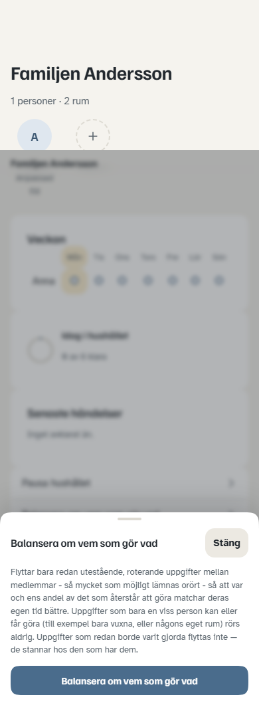</div>"
                + "    <figcaption><b>Balansera om</b> – berättar efteråt hur många som bytte ansvarig.</figcaption></figure>"
                + "</div>"

                + "<ul>"
                + "  <li>Bara uppgifter som roterar flyttas. Sådant som hör till en bestämd person – "
                + "      någons eget rum, eller en uppgift bara vuxna får göra – rörs aldrig.</li>"
                + "  <li>Uppgifter som redan borde varit gjorda flyttas inte. De stannar hos den som "
                + "      har dem, så ingen får en hög med andras efterblivna arbete.</li>"
                + "  <li>Så lite som möjligt ändras. Går det redan jämnt ut säger appen det i stället "
                + "      för att flytta runt saker i onödan.</li>"
                + "</ul>"

                + "<div class='notis tips'><strong>Var och ens tid ställer du per person.</strong> Öppna "
                + "personens kort under <span class='ui'>Hushåll</span> – välj en roll, eller sätt tid "
                + "per veckodag om helgen ser annorlunda ut än vardagen.</div>"
        },
        {
            id: "pausa",
            t: "När ni är borta",
            html:
                "<p>Ska hela familjen resa bort? Pausa hushållet i stället för att låta en vecka "
                + "hopa sig till hemkomsten.</p>"

                + "<div class='shots'>"
                + "  <figure><div class='telefon'>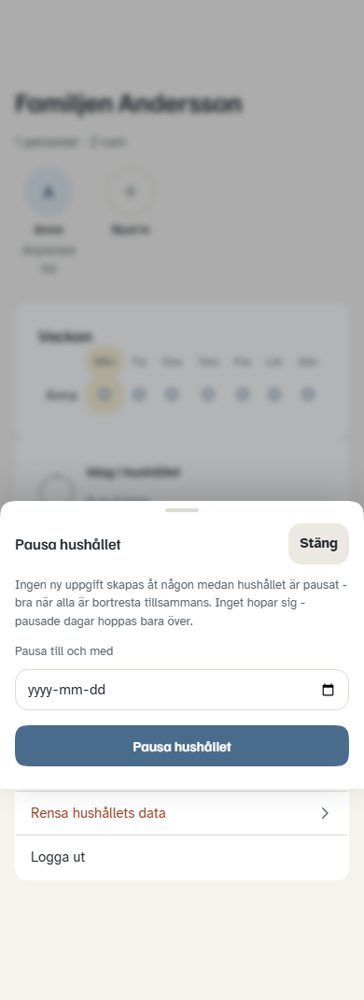</div>"
                + "    <figcaption><b>Pausa hushållet</b> – välj sista dagen ni är borta.</figcaption></figure>"
                + "</div>"

                + "<ul>"
                + "  <li><strong>Hela hushållet</strong> – inget nytt planeras åt någon under pausen.</li>"
                + "  <li><strong>En person</strong> – öppna deras kort och pausa där. Bra när en reser "
                + "      men resten är hemma.</li>"
                + "  <li><strong>Ett rum</strong> – under en renovering. Rummets sysslor vilar så länge.</li>"
                + "</ul>"

                + "<div class='notis'><p>Pausade dagar hoppas över, de sparas inte. Ni kommer hem till "
                + "en vanlig dag, inte till en skuld.</p></div>"
        },
        {
            id: "borja-om",
            t: "Börja om från början",
            html:
                "<p>Blev uppsättningen fel från start, eller vill ni göra om den när ni flyttat? "
                + "<span class='ui'>Rensa hushållets data</span> tar bort alla rum, alla uppgifter och "
                + "all historik – men behåller familjen och era konton.</p>"

                + "<div class='shots'>"
                + "  <figure><div class='telefon'>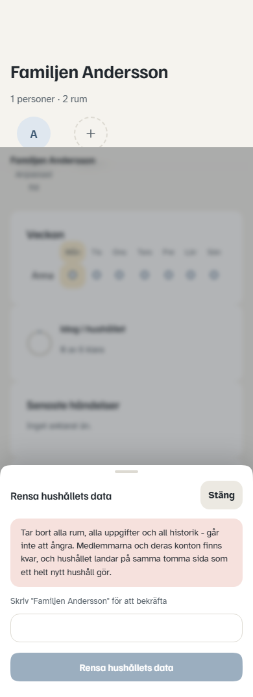</div>"
                + "    <figcaption><b>Rensa</b> – du måste skriva hushållets namn för att bekräfta.</figcaption></figure>"
                + "</div>"

                + "<div class='notis obs'><strong>Det går inte att ångra.</strong> Därför måste du skriva "
                + "hushållets namn exakt innan knappen blir möjlig att trycka på. Medlemmarna, deras konton "
                + "och era personliga inställningar påverkas inte – bara rum, uppgifter och historik.</div>"

                + "<p>Efteråt landar ni på en tom rumsvy, precis som ett helt nytt hushåll. Börja om från "
                + "<a href='#rum'>Lägg till rum</a>.</p>"
        }
    ],
    footer: "<p>Guide för Hemordna. Skärmbilderna tas automatiskt mot appen på 390 × 844 och kan "
        + "tas om när gränssnittet ändras – se <code>GuideSkarmbilderTests</code>.</p>"
        + "<p><a href='familjen.html'>← För alla i familjen</a></p>"
};
</script>
<script src="../assets/guide.js"></script>
</body>
</html>
